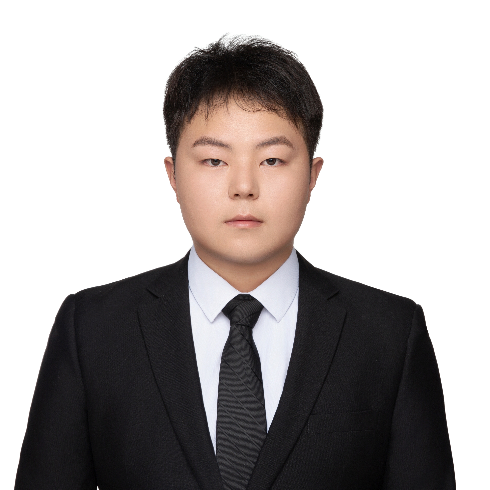
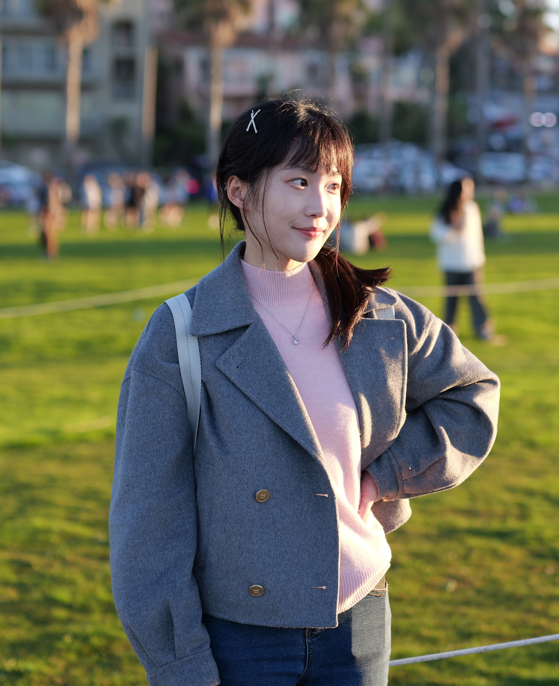
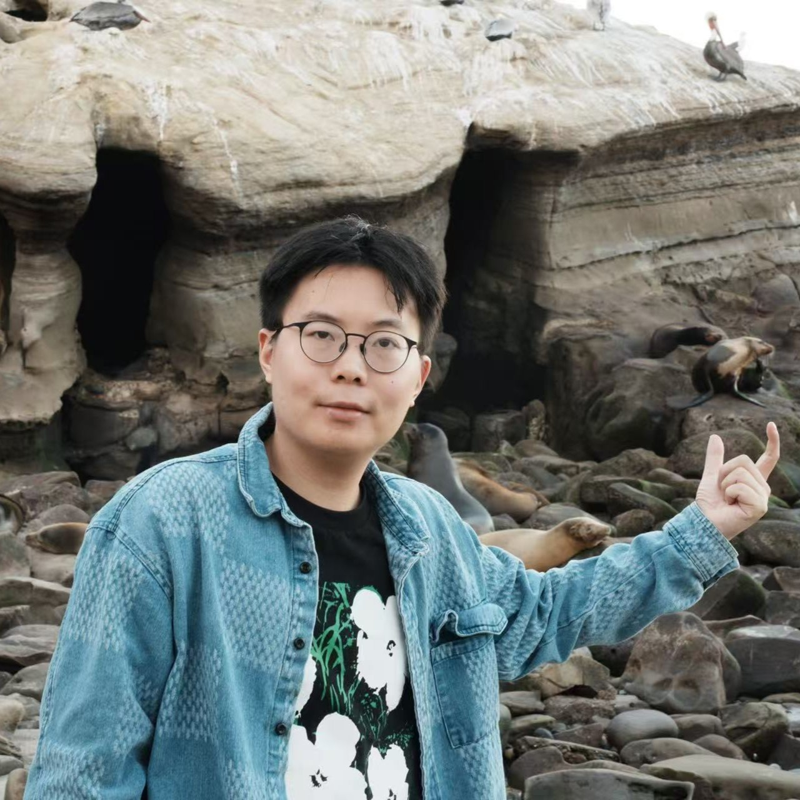
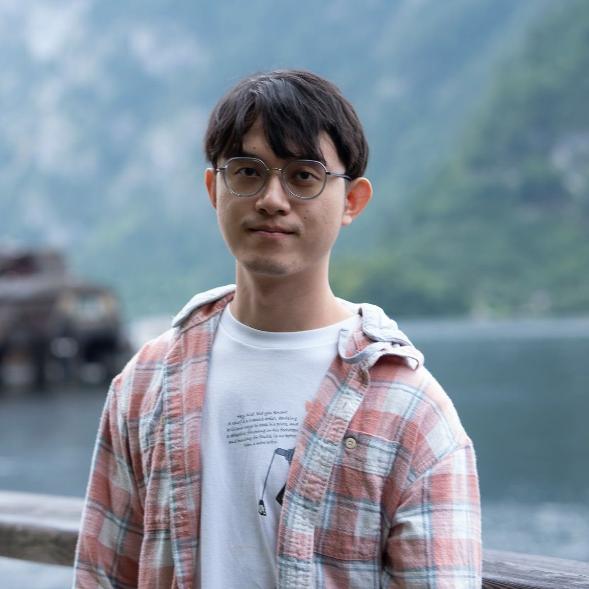
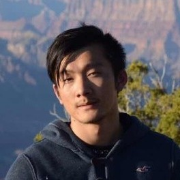
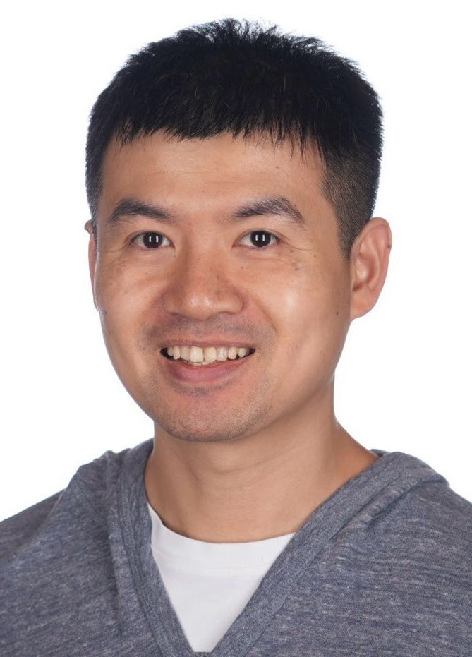
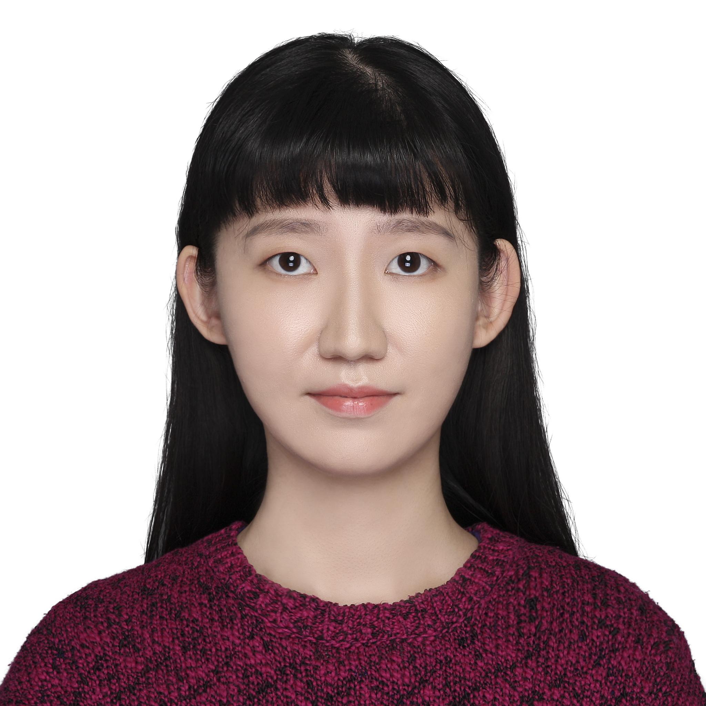

Reliable Scientific
Foundation Models
Design · Training · Grounding · Verification






About RelSciFM
RelSciFM focuses on building reliable Scientific Foundation Models (SciFMs) for scientific discovery and high-stakes decision-making. The workshop emphasizes design and training, grounding to scientific evidence, and verification protocols that make model claims auditable and replayable.
We bring together researchers and practitioners across data mining, machine learning, and domain sciences to share methods, datasets, benchmarks, and best practices for reliable, grounded, and verifiable SciFMs.
ICC Jeju
International Convention Center Jeju, Jeju, Korea
August 10, 2026
1:00 PM – 5:00 PM (half day)
3 keynotes · 1 panel
4 oral talks, 6 spotlight talks, 9 posters
Non-archival
Double-blind review; accepted papers made public
Topics
Key themes and questions we explore at RelSciFM.
Architecture Design with Scientific Priors
Inductive biases for invariances, conservation laws, units, and geometry
Evidence Grounding and Provenance
Retrieval over databases and knowledge graphs with explicit attribution
Tool- and Simulator-Integrated Modeling
Reliable interfaces to simulators, solvers, and symbolic engines
Reliable Data and Pretraining
Curation for quality and coverage; robust objectives under shift
Uncertainty and Risk Control
Calibration, abstention/defer, and risk–coverage trade-offs
Validity, Robustness, and Stress Tests
Constraint checks, invariance tests, closed-loop tool validation
Reproducibility and Auditing
Versioned pipelines, seed capture, and tool-trace logs
Benchmarks and Community Testbeds
Reliability-focused benchmarks and shared evaluation harnesses
Invited Keynote Speakers

Yuan Fang
Gang Liu
Liang Zhao
Event Schedule
August 10, 2026 · 1:00 PM – 5:00 PM · ICC Jeju
Yuan Fang
AI4Sciences Track Lightning Talks
SpectrumWorld: Artificial Intelligence Foundation for Spectroscopy
Machine Learning for Depression Screening and Intervention: an Original Circadian Rhythm Score-based Methodology
Deformation Localization Theory Guided Transfer Learning for Mining-induced Seismicity Risk Zone Prediction
Learning Probabilistic Compositional Representation of Crystalline Materials
Trustworthy Protein-Ligand Binding Affinity Prediction via Reliability-Aware Multi-Engine Fusion
MemNovo: Look Back at the Spectrum for Balanced De Novo Peptide Sequencing from Mass Spectrometry
& Poster Session
Accepted Posters
Gang Liu
Workshop Oral Talks
ProSAM: Modular and Energy-Guided Fine-Tuning of Protein Language Models for Structure Prediction
Interactive Benchmarking of Scientific Coding Agents for Spatial Transcriptomics Alignment
Tokenizing Antibody–Antigen Complex Structures via Energy-Based Surrogates
Physics-Embedded Graph Neural Operator for Interaction-Controlled Colloidal Aggregation
Liang Zhao
Panel Discussion
Hangwei Qian

Chang Xu
Xiangliang Zhang
Awards & Closing
Awards & Closing
Awards & Closing